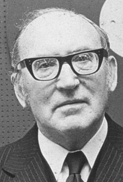
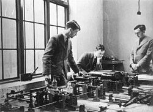
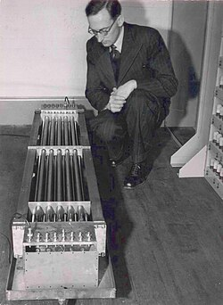

Sir Maurice Wilkes | |
|---|---|
 Maurice Wilkes in 1980 | |
| Born | John Maurice Vincent Wilkes 26 June 1913 Dudley, Worcestershire, England |
| Died | 29 November 2010 (aged 97) Cambridge, Cambridgeshire, England |
| Education | St John's College, Cambridge (BA, MA, PhD) |
| Known for | Cache memory |
| Spouse |
Nina Twyman
(m. 1947; died 2008) |
| Children | one son, two daughters |
| Awards |
|
| Scientific career | |
| Fields | Computer science |
| Institutions | |
| Thesis | The reflexion of very long wireless waves from the ionosphere (1939) |
| John Ashworth Ratcliffe[3] | |
Doctoral students | |
| Website | www |
Sir Maurice Vincent Wilkes (26 June 1913 – 29 November 2010[11]) was an English computer scientist who designed and helped build the Electronic Delay Storage Automatic Calculator (EDSAC), one of the earliest stored-program computers, and who invented microprogramming, a method for using stored-program logic to operate the control unit of a central processing unit's circuits. In 1967 he won the ACM Turing Award. At the time of his death, Wilkes was an Emeritus Professor at the University of Cambridge.
Wilkes was born in Dudley, Worcestershire, England[12] the only child of Ellen (Helen), née Malone (1885–1968) and Vincent Joseph Wilkes (1887–1971), an accounts clerk at the estate of the Earl of Dudley.[13] He grew up in Stourbridge, West Midlands, and was educated at King Edward VI College, Stourbridge. During his school years he was introduced to amateur radio by his chemistry teacher.[14]

He studied the Mathematical Tripos at St John's College, Cambridge, from 1931 to 1934, and in 1936 completed his PhD in physics on the subject of radio propagation of very long radio waves in the ionosphere.[15] He was appointed to a junior faculty position of the University of Cambridge, through which he was involved in the establishment of a computing laboratory. He was called up for military service during World War II and worked on radar at the Telecommunications Research Establishment (TRE) and in operational research.[16]
In 1945, Wilkes was appointed as the second director of the University of Cambridge Mathematical Laboratory (later known as the Computer Laboratory).[12]
The Cambridge laboratory initially had many different computing devices, including a differential analyser. One day Leslie Comrie visited Wilkes and lent him a copy of John von Neumann's prepress description of the EDVAC, a successor to the ENIAC[17][18] under construction by Presper Eckert and John Mauchly at the Moore School of Electrical Engineering. He had to read it overnight because he had to return it and no photocopying facilities existed. He decided immediately that the document described the logical design of future computing machines, and that he wanted to be involved in the design and construction of such machines. In August 1946 Wilkes travelled by ship to the United States to enroll in the Moore School Lectures, of which he was only able to attend the final two weeks because of various travel delays.[19] During the five-day return voyage to England, Wilkes sketched out in some detail the logical structure of the machine which would become EDSAC.

Since his laboratory had its own funding, he was immediately able to start work on a small practical machine, EDSAC (for "Electronic Delay Storage Automatic Calculator"),[8] once back at Cambridge. He decided that his mandate was not to invent a better computer, but simply to make one available to the university. Therefore, his approach was relentlessly practical. He used only proven methods for constructing each part of the computer. The resulting computer was slower and smaller than other planned contemporary computers. However, his laboratory's computer was the second practical stored-program computer to be completed and operated successfully from May 1949, well over a year before the much larger and more complex EDVAC. In 1950, along with David Wheeler, Wilkes used EDSAC to solve a differential equation relating to gene frequencies in a paper by Ronald Fisher.[20] This represents the first use of a computer for a problem in the field of biology.
In 1951, he developed the concept of microprogramming[10] from the realisation that the central processing unit of a computer could be controlled by a miniature, highly specialised computer program in high-speed ROM. This concept greatly simplified CPU development. Microprogramming was first described[21] at the University of Manchester Computer Inaugural Conference in 1951,[22] then expanded[23] and published in IEEE Spectrum in 1955. This concept was implemented for the first time in EDSAC 2,[9] which also used multiple identical "bit slices" to simplify design. Interchangeable, replaceable tube assemblies were used for each bit of the processor. The next computer for his laboratory was the Titan, a joint venture with Ferranti Ltd begun in 1963. It eventually supported the UK's first time-sharing system[24][25] which was inspired by CTSS[26][27] and provided wider access to computing resources in the university, including time-shared graphics systems for mechanical CAD.[28]
A notable design feature of the Titan's operating system was that it provided controlled access based on the identity of the program, as well as or instead of, the identity of the user. It introduced the password encryption system used later by Unix. Its programming system also had an early version control system.[28]
Wilkes is also credited with the idea of symbolic labels, macros and subroutine libraries. These are fundamental developments that made programming much easier and paved the way for high-level programming languages. Later, Wilkes worked on an early timesharing system (now termed a multi-user operating system) and distributed computing. Toward the end of the 1960s, Wilkes also became interested in capability-based computing, and the laboratory assembled a unique computer, the Cambridge CAP.[29]
In 1974, Wilkes encountered a Swiss data network (at Hasler AG) that used a ring topology to allocate time on the network. The laboratory initially used a prototype to share peripherals. Eventually, commercial partnerships were formed, and similar technology became widely available in the UK.
Wilkes received a number of distinctions: he was a Knight Bachelor, Distinguished Fellow of the British Computer Society, a Fellow of the Royal Academy of Engineering and a Fellow of the Royal Society.[30][31][32][33][14][16][34][35] Wilkes was a founder member of the British Computer Society (BCS) and its first president (1957–1960). He received the Turing Award in 1967, with the following citation: "Professor Wilkes is best known as the builder and designer of the EDSAC, the first computer with an internally stored program. Built in 1949, the EDSAC used a mercury delay-line memory. He is also known as the author, with David Wheeler and Stanley Gill, of a volume on Preparation of Programs for Electronic Digital Computers in 1951,[36] in which program libraries were effectively introduced." In 1968 he received the Harry H. Goode Memorial Award, with the following citation: "For his many original achievements in the computer field, both in engineering and software, and for his contributions to the growth of professional society activities and to international cooperation among computer professionals."[37]
In 1972, Wilkes was awarded an honorary Doctor of Science by Newcastle University.[38]
In 1980, he retired from his professorships and post as the head of the Computer Laboratory and joined the central engineering staff of Digital Equipment Corporation in Maynard, Massachusetts, US.[12]
Wilkes was awarded the Faraday Medal by the Institution of Electrical Engineers in 1981. The Maurice Wilkes Award, awarded annually for an outstanding contribution to computer architecture made by a young computer scientist or engineer, is named after him. In 1986, he returned to England and became a member of Olivetti's Research Strategy Board. In 1987, he was awarded an Honorary Degree (Doctor of Science) by the University of Bath. In 1993 Wilkes was presented, by Cambridge University, with an honorary Doctor of Science degree. In 1994 he was inducted as a Fellow of the Association for Computing Machinery. He was awarded the Mountbatten Medal in 1997 and in 2000 presented the inaugural Pinkerton Lecture. He was knighted in the 2000 New Years Honours List. In 2001, he was inducted as a Fellow of the Computer History Museum "for his contributions to computer technology, including early machine design, microprogramming, and the Cambridge Ring network."[39] In 2002, Wilkes moved back to the Computer Laboratory, University of Cambridge, as an emeritus professor.[12]
In his memoirs Wilkes wrote:[16]
I well remember when this realization first came on me with full force. The EDSAC was on the top floor of the building and the tape-punching and editing equipment one floor below. ... It was on one of my journeys between the EDSAC room and the punching equipment that "hesitating at the angles of stairs" the realization came over me with full force that a good part of the remainder of my life was going to be spent in finding errors in my own programs.
Wilkes married classicist Nina Twyman in 1947.[40] She died in 2008, he in 2010. Wilkes was survived by one son and two daughters.
As soon as we started programming, we found to our surprise that it wasn't as easy to get programs right as we had thought. We had to discover debugging. I can remember the exact instant when I realized that a large part of my life from then on was going to be spent in finding mistakes in my own programs.
Sir Maurice, as he is known today, had been inspired by CTSS to create a time-sharing system
{{cite CiteSeerX}}: Cite uses deprecated parameter |citeseerx= (help)
Maurice Wilkes discovered CTSS on a visit to MIT in about 1965, and returned to Cambridge to convince the rest of us that time-sharing was the way forward
{{cite CiteSeerX}}: Cite uses deprecated parameter |citeseerx= (help)
.jpg){kind=link}
{kind=link}
.jpg){kind=link}